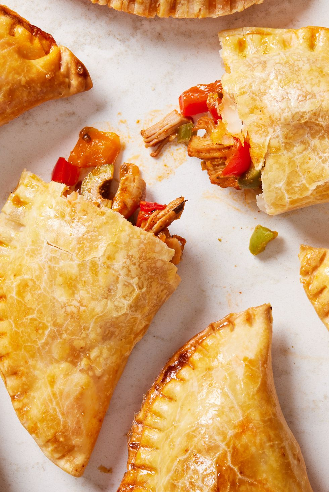

Chicken Empanadas

PHOTO: ERIK BERNSTEIN; FOOD STYLING: LENA ABRAHAM
Description
Empanadas come in many different forms with many different fillings. This version is a flavor bomb,
with tender chicken thighs, peppers, and olives, bolstered by tomato paste and paprika, but feel free
to go the ground beef route if that's more your jam!
Ingredients
- 2 lb. boneless, skinless chicken thighs
- Kosher salt
- Freshly ground black pepper
- 2 bay leaves
- 2 tbsp. vegetable oil
- 1 large onion, chopped
- 1 red bell pepper, chopped
- 1 orange bell pepper, chopped
- 3 cloves garlic, minced
- 2 tbsp. tomato paste
- 1 tbsp. sweet paprika
- 2 tsp. cumin
- 1/2 c. castelvetrano or green olives, roughly chopped
- 12 to 16 frozen and thawed empanada wrappers, such as Goya
- 1 egg, beaten
Steps
-
Preheat the oven to 375º. Pat chicken thighs dry with paper towels
and season thoroughly on all sides with salt and pepper. Add chicken
to a medium-size pot, and add water just to cover the chicken. Add a
tablespoon of salt and bay leaves, and bring to a boil.
-
Reduce heat to medium-low, cover and cook until the chicken is cooked
through and registers 165ºF when probed with a thermometer, about 10 minutes.
-
Transfer chicken to a bowl or cutting board to cool. Reserve 1 cup of the cooking
water and set aside. Shred chicken and set aside.
-
In a large skillet over medium-high heat, heat oil. Heat until it shimmers, then
add onion and bell peppers. Cook until the onion is golden and the peppers have begun
to brown on the edges, 6 to 8 minutes.
-
Add garlic and cook until fragrant, about 1 minute. Reduce heat to medium and stir in
tomato paste and cook until it has darkened slightly in color, 2 to 3 minutes.
-
Add the shredded chicken, paprika, oregano, and cumin. Mix well until fully combined.
Cook for 4 to 5 minutes or until the chicken is heated through and the spices have toasted slightly.
Add the olives and mix until combined.
-
Pour in reserved 1 cup cooking liquid and cook, stirring occasionally until a glossy sauce forms on the
chicken, 2 to 3 minutes. Remove from the heat and let cool slightly.
-
To shape the empanadas: Roll out a wrapper until it is about ¼” to ½” larger than it was before.
Scoop 2 to 3 tablespoons of filling onto the center of the wrapper. Brush a bit of beaten egg wash
on the edges of the dough, then fold the wrapper so that it resembles a half moon.
-
Press the ends together and crimp by pleating the edges or pressing down with a fork.
Repeat until all the filling has been used.
-
Transfer empanadas to a baking sheet and brush the tops with more egg wash.
Bake until the pastry is golden brown, about 20 to 25 minutes. Allow to cool for
5 to 10 minutes and serve.